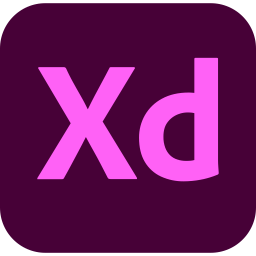

About Me
I’m a UX/UI designer, but you might also hear me called a UX Researcher, Information Architect, or a UX Writer. No matter my title, I am just a designer passionate about creating impactful design that embraces user feedback. You can find me in Minneapolis, where I live with my partner and our xolo, Tepín. When I’m not working on design projects, I’m probably checking out local breweries, watching (and sometimes playing) rugby, or dancing a polka (in costume).
A Bit About How I Design
Drawing Inspiration from Recreation
I love puzzles, riddles, trivia, and games. From the Sunday crossword to D&D, Trivial Pursuit to Minecraft, I’m a big fan of collecting information and using it to take something apart or put it together.
In design, this translates into a passion for creative problem solving, whether I’m working with what I’m given or creating the exact tools I need to solve any design problem.
Empathy-First, User-Driven Design
Making people happy is a big part of what drives me. It makes advocating for a user’s needs one of the most important and enjoyable parts of any design I work on. A design is most successful when it can be used easily, effectively, and enjoyably.
Understanding the user, their needs, and their motivations is my first step in every design. It creates the benchmark I use to define success, and connecting with the user early on helps keep them in mind as I work through a design.

Did Someone Say Spreadsheets?
Organized. Data-driven. Meticulous. A big nerd. I’m not sure the best way to describe someone who gets so excited about surveys, graphs, charts, tables, and figures, but I’d like to say I’m pro-information.
I’m continually trying to learn more; to understand more. For an individual design prompt, this means I am passionate about collecting and analyzing data. This also means that I am continually trying to expand my skill set, whether through trial and error, articles, video tutorials, or coursework.
Skills
UX Research
- User Interviews
- Competitor Analysis
- Affinity Diagrams
- Heuristic Analysis
- Survey Creation
- Data Synthesis & Analysis
- Usability Studies
- Persona Creation
- Empathy Mapping
- Storyboarding
- User Flows
UX Design
- Accessible Design
- Content Design
- Copy Writing & Editing
- Card Sorting
- Information Architecture
- Sitemapping
- Wireframes
- Prototyping
- Usability Testing
- Redlining & Annotations
- Atomic Design
UI Design
- Design Systems
- Style Guides
- Gestalt Principles
- Typography
- Color Theory
- UI Grids
- Components
Languages
- HTML5
- CSS
- JavaScript
- jQuery
- Bootstrap
Toolkit
-
Figma
-
Invision
-

Adobe XD
-

GitHub
-
Visual Studio Code
-
Codepen
-
Slack
-
Trello
-
Miro
-

Google Workspace